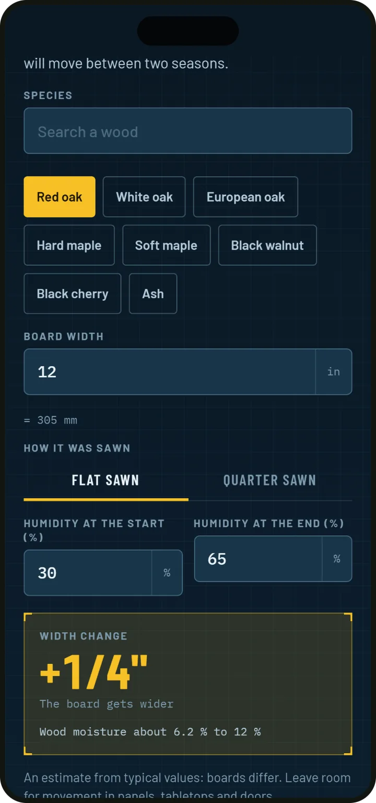

Plywood and boards laid out before you cut
Benchwise is a cut list optimizer for woodworkers. List the parts and the stock, and it draws every sheet and board with numbered parts, counts the saw kerf and tells you how much to buy.
For iPhone and iPad (iOS 16.4 or later). Free, with an optional Pro upgrade.
Cut layouts a table saw can follow
Sheets are cut in two directions with straight cuts from edge to edge, the way a table saw or a track saw works. Boards are cut along their length, and parts marked for grain are never turned.
- Every sheet and board drawn with numbered parts
- The saw kerf you set is counted between the parts
- A buy list with how many sheets and boards to get and what they cost
Ten plans to start from
A wall shelf, planter box, birdhouse, picture frame, step stool, bookshelf, garden bench, side table, workbench and raised bed. Each one opens in metric or imperial, with steps to tick off as you build.
- Start a plan as your own project, change the width of a shelf and the sheets redraw
- All ten plans are free
Lengths typed the way the tape reads
Type 24 1/2, 2' 3, 610 or 61 cm. Benchwise reads each one, shows it in the other unit underneath and rounds to the nearest sixteenth. The tape calculator adds 24 1/2 and 3/4 to 25 1/4 without a decimal in sight.
Shop math before the glue-up
Check how much a tabletop will move between two humidities, for 30 species. The wood guide gives hardness, density, workability, outdoor use and price for the same 30 woods.
- Board feet, equal spacing, miter and slope angles
- Screws and pilot holes, sanding grit order
- How many pieces a board yields

Free and Pro
| Free | Pro | |
|---|---|---|
| Calculators and the wood guide | Included | Included |
| The ten plans | Included | Included |
| Project size | Up to 20 pieces | Any size |
| PDF cut sheets to print | Not included | Included |
| CSV files for a spreadsheet | Not included | Included |
Pro is a yearly subscription that begins with three free days, or a single lifetime purchase. The App Store shows the price in your currency before you buy.
Questions
Does Benchwise work without signal?
Yes. Projects stay on your phone and work in a shop without signal. A backup file carries them to a new phone.
Can I work in inches and in millimeters?
Yes. Every plan opens in metric or imperial, and a length can be typed as 24 1/2, 2' 3, 610 or 61 cm.
How does it cut sheet goods?
With straight cuts from edge to edge in two directions, the way a table saw or a track saw cuts, with the kerf counted. Parts marked for grain are never turned.
What does Pro add?
Projects of any size, PDF cut sheets to print and CSV files for a spreadsheet. The calculators, the wood guide, all ten plans and projects of up to 20 pieces are free.
Which languages does Benchwise speak?
English, German, French, Spanish, Italian, Portuguese, Dutch and Polish.
Lay out your next build in Benchwise
For iPhone and iPad (iOS 16.4 or later). Free, with an optional Pro upgrade.